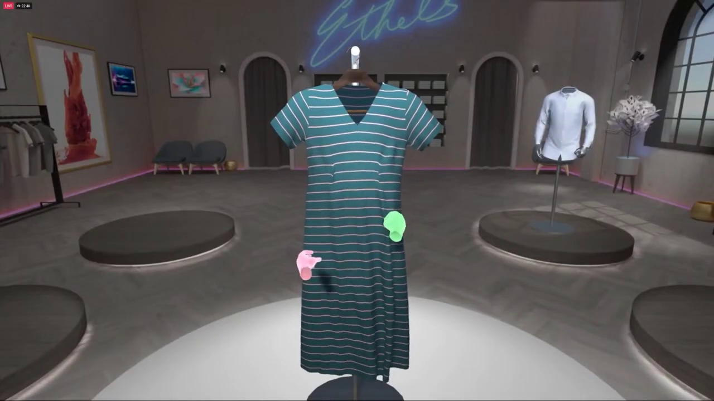
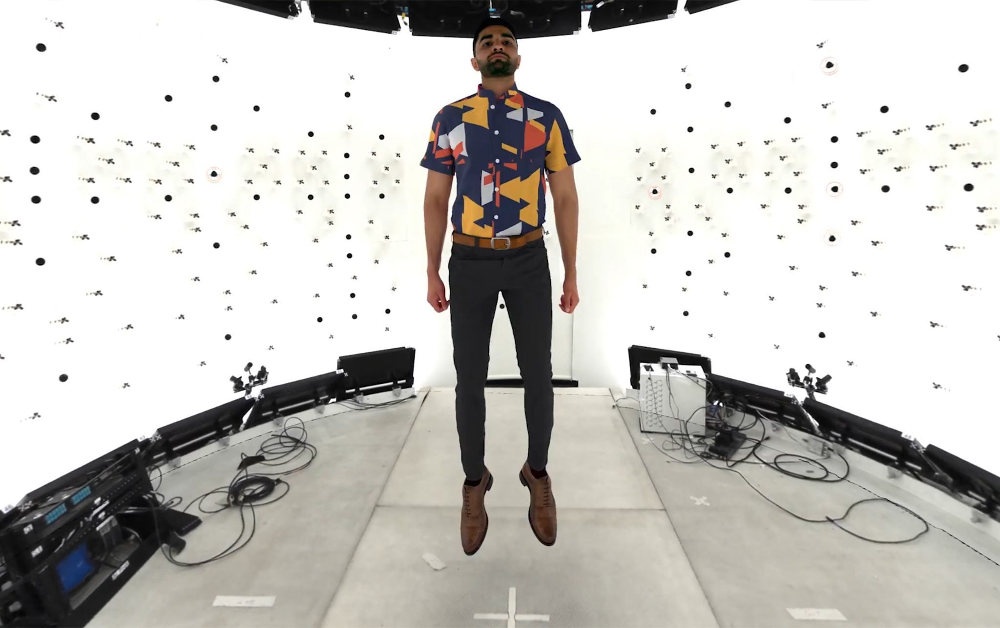
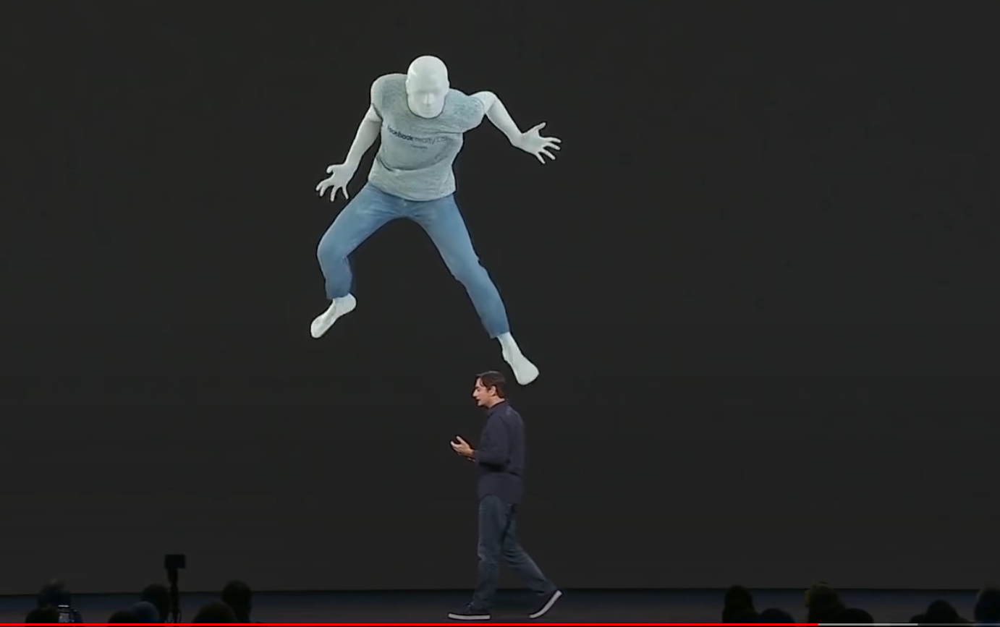
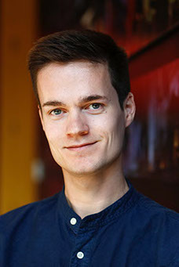
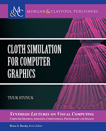
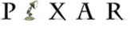

Tuur Stuyck
Research Scientist Lead - Meta
Physics-based simulation, robotics, and avatars.
I am a Team Lead and Research Scientist at Meta Reality Labs specializing in physics-based simulation, robotics, high-performance computer graphics, machine learning, and virtual avatars. Experienced individual contributor and leader.
I am the 2026 SIGGRAPH Poster chair and served on the 2025 SIGGRAPH Asia Technical Paper Committee, as well as the SIGGRAPH 2025 Student Research Competition Chair and on the SIGGRAPH 2019 and 2020 Immersive Pavilion Committees. I also served as a committee member for High Performance Graphics 2021.
I am the author of the book Cloth Simulation for Computer Graphics.
I previously worked at Adobe Research and Pixar Animation Studios' research group. I have made several computer animated short movies. [link]
Publications
Books

Work History
